平安蜀黍的前端教程 > React 必学知识点 > flex 属性详解
flex 教程网上有很多，基本上都是参考阮一峰老师的教程来的，如果你对 flex 完全没有概念，可以看看下面两篇文章：
整个 flex 都是非常简单的，但我们有些同学英语可能不是很好，然后也不理解各种属性和值的意思，只能死记字母，这样效率太低。所以，我们今天不重复去讲什么语法什么的，就是讲属性和值的意思，让你们能够理解然后记住。
容器属性
任何使用了 display: flex 属性的元素都被称之为 flex 容器或者 flex 盒子。display 在这里的意思是展示或陈列的方式，flex 的意思是有弹性的。flex 布局分为容器和子元素，我们先从容器讲起，flex 的容器自身有 6 种属性：
flex-direction 属性
flex-direction：direction，方向的意思，所以，这个属性是用于描述容器中主轴的方向，也就是子元素的排列方向：
row
flex-direction 的默认值，row 行的意思，主轴为水平轴，在这里可以理解为我们写字的方式，水平排列，子元素从左向右排列；
row-reverse
reverse 反转的意思，也就是说，主轴仍然为水平轴，反转前后顺序，子元素从右向左排列；
column
column 列的意思，这里可以理解为主轴为垂直轴，子元素按从上往下的方向排列，类似于书写毛笔字的方式；
column-reverse
垂直排列，从下往上。

flex-wrap 属性
flex-wrap：wrap，在 css 中这个属性用于描述当子元素排满一行后是否换行及换行方式：
nowrap
flex-wrap 属性的默认值。意思是不换行，无论有多少子元素，排不下就硬挤，忽略所有 padding 与 margin，再挤不下就超出，不管是否在可见区域内；
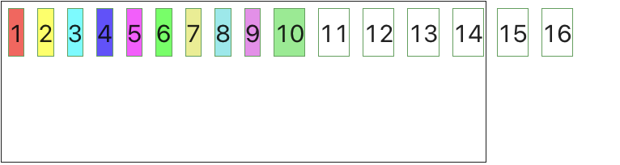
wrap
换行，水平轴为主轴时从上往下排列，垂直轴为主轴时从左往右排列；在这里要注意，flex 容器内如果子元素换行，在没有指定交叉轴的对齐方式时，则每一行平分整个容器的高度，后面的align-items中我们会讲到交叉轴的对齐方式。
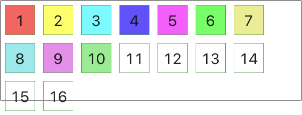
wrap-reverse
换行，水平轴为主轴时从下往上排列，垂直轴为主轴时从右往左排列。我个人觉得这个应该是为中文设计的，当主轴设定为垂直轴时，就呈现出了老式线装书的从上往下，从右往左的排列方式。貌似湾湾同胞们还在使用这种方式排版：
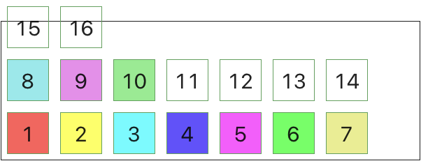
flex-flow 属性
flex-flow：上两个属性的组合声明，像我们写 border 或 background 一样，可以同时描述方向与换行方式，这样可以减少书写属性代码。属性值参考 direction 与 wrap 即可。建议平时书写样式都用这个属性。
justify-content 属性
justify-content：justify 的意思是整理，content 的意思是内容；所以，在这里它的意思是整理内容，就是说让容器内的子元素按照什么样的方式来排列与对齐。
flex-start
flex-start：justify-content 的默认值。以起点位置为对齐边线，比如，当属性 flex-direction 为 row 时，子元素对齐容器左侧边线，如果 flex-direction 为 column-reverse 时，子元素对齐容器底部边线；
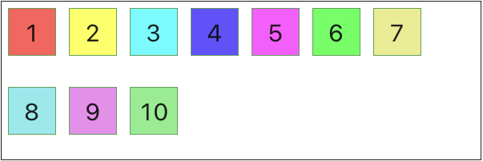
flex-end
flex-start：与 start 相反，以终点位置为对齐边线，当属性 flex-direction 为 row 时，子元素对齐容器右侧边线；
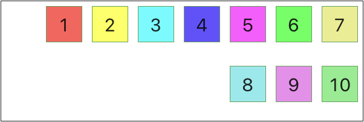
center
center：以中间点对齐，与 text-align: center 类似
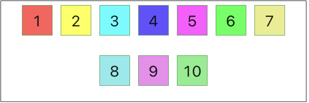
space-between
space-between：space，空间的意思；between，在这里的意思是分开；所以翻译过来就是将空间平均分开。两边对齐，如果子元素未排满容器，则所有元素平分剩余空间，前后两个元素靠近容器边框的部分不占用空间
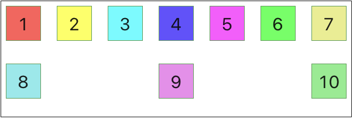
space-around
space-around: around，环绕分布；也是两边对齐，但要注意的是，如果子元素未排满容器，前后两个元素靠近容器边框的部分也占用空间
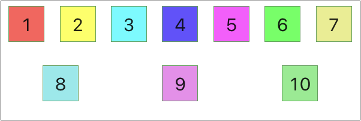
space-evenly
space-evenly: evenly，均匀分布；与 around 类似，区别在于最后一行的空间分布更加均匀。
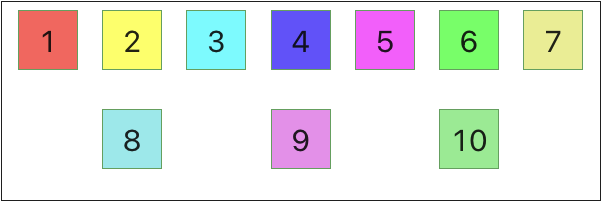
align-items 属性
这个属性用于描述子元素在交叉轴上的对齐方式。
什么是交叉轴？交叉轴的意思就是与主轴垂直相交的那条轴线，比如，我们的 flex-direction 定义为 row 时，表示主轴为水平轴，那么交叉轴对应的就是垂直轴。
stretch
stretch，弹性或自适应的意思，align-items 属性的默认值。当我们不指定 align-items 属性时，flex 容器内的元素会自动按照容器的高度进行适配，如果没有换行，所有元素占用整个容器的高度；如果有换行，则每行平分容器的高度；如果内部元素有指定高度，则以内部元素高度为准。
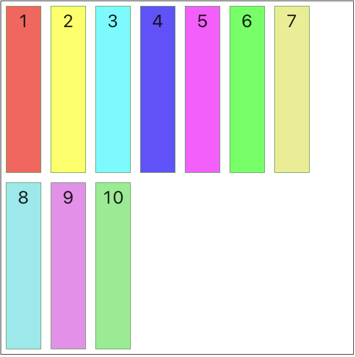
flex-start
与 justify-content 里的 flex-start 差不多，只不过这个对齐指的是交叉轴上的对齐方式。比如 flex-direction 为 row 时，align-items 设定为 flex-start，表示每个元素水平轴从左向右排列，每个元素的上边与容器的上边对齐：
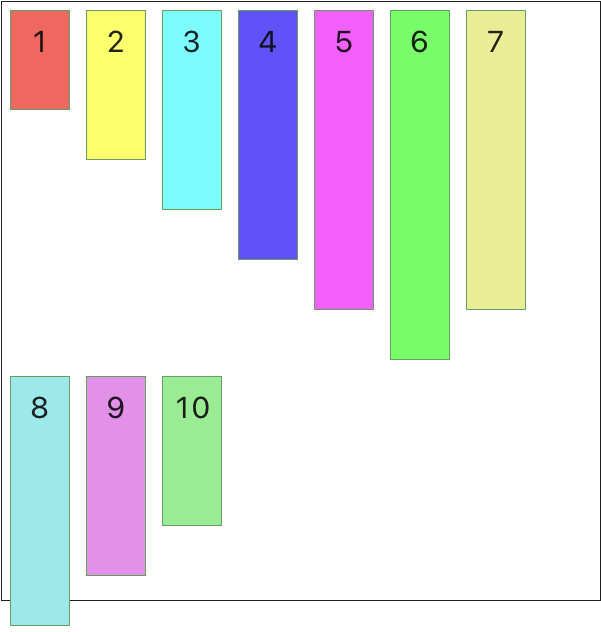
flex-end
与 flex-start 相反，如果 flex-direction 为 row 时，每个元素的底边与容器的底边对齐：
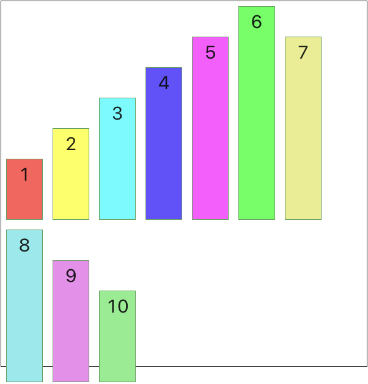
center
子元素中线对齐

baseline
子元素按文字基线对齐
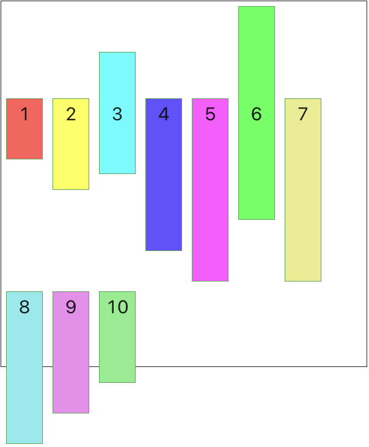
align-content 属性
align-content 用于描述子元素较多有换行时的子元素对齐方式，具体的值与 justify-content 属性的值一致，大家可以自己去试验一下，这里就不占用太多时间去复述了。
元素属性
上面说了容器的属性，接下来我们需要了解的是元素的属性，相对于容器，元素的属性要简单一些
order 属性
order 属性，这个不是很常用。它的功能是让我们在 css 中对子元素进行一个排序，我们可以通过给子元素添加 order 属性来调整每一个子元素的位置：
<ul>
<li class="item">第一个</li>
<li class="item">第二个</li>
<li class="item">第三个</li>
<li class="item">第四个</li>
<li class="item">第五个</li>
</ul>
.item {
&:nth-child(1) {
order: 5;
}
&:nth-child(2) {
order: 4;
}
&:nth-child(3) {
order: 3;
}
&:nth-child(4) {
order: 2;
}
&:nth-child(5) {
order: 1;
}
}

flex-grow 属性
flex-grow：grow，增加的意思，这个属性用于描述当子元素无法填满整个容器时，元素可以放大的比例。默认值为 0，表示如果存在剩余空间时，该元素不放大；如果有元素的 flex-grow 值为 1，则当有剩余空间时，所有值为 1 的元素等分剩余空间。
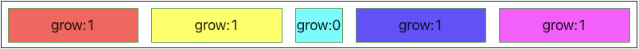
如上图，每个元素的默认占用空间为 80，容器宽度为 800，当容器中只有 5 个元素时，所有元素平分剩下的 400px - 2。中间元素 grow 为 0，所以不需要调整大小。这样其它 4 个元素平分剩下的 398px，每个元素的宽度自动调整到 179.5px;
如果有元素 flex-grow 值为 2 或更多时，表示这个元素占用的空间是其它元素的多少倍：
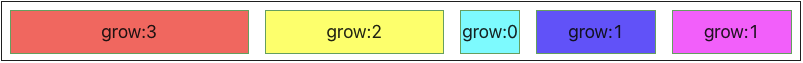
如上图，第一个元素放大 3 倍，第二个元素放大 2 倍，计算方式则为 3+2+0+1+1=7，flex 会认为是 7 个元素平分剩下的 398px，然后用 grow 乘以等分的值，比如这里是 56.86，grow 为 1 的元素宽度调整到 80 + 56.86 = 136.86，grow 为 2 的元素宽度则调整到 193.72。
flex-shrink 属性
flex-shrink：shrink，减少的意思，这个属性用于描述当子元素数量超出整个容器时，元素可以缩小的比例。默认值为 1，表示如果空间不足，调整该元素的宽度：
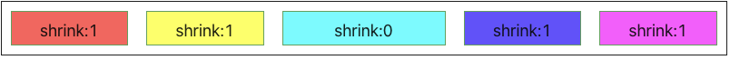
如上图，每个元素默认占用空间为 200，容器宽度为 800，当容器中有 5 个元素时，flex 会参照 flex-shrink 的值来对元素宽度进行调整，其中 shrink 为 0 的元素宽度不变，其它元素按照比例调整宽度：(800 - 598) / 4 = 50.5，也就是说每个 149.5px
如果有元素 flex-shrink 值为 2 或更多时，表示这个元素会缩进更多的比例
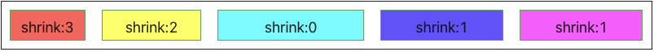
如上图，第一个元素缩小 3 倍，第二个元素缩小 2 倍，计算方式则为(800 - 598) / (3 + 2 + 1 + 1) = 28.86；shrink 为 3 的元素宽度调整到 200-28.86*3=113.42，同样，shrink 为 2 的元素宽度调整到 200-28.86*2=142.28
flex-basis 属性
flex-basis 属性用于描述在分配空间之前，元素能够占用多少空间，它可以使用绝对宽度 px，这样当元素大小需要调整时它的占用空间不会发生变化，它能接受的值为 auto 或绝对宽度值比如 200px 或者相对于容器空间的百分比如 20%；
flex-basis 的优先级要高于 width 或 height，当某个元素上同时存在 width 和 flex-basis 时，flex-basis 的描述生效。
flex 属性
flex-grow，flex-shrink，flex-basis 的集中声明，用于同时描述三种属性的值以减少属性描述，这个属性有两个快捷值： auto: 1 1 auto 表示该元素可以跟随容器空间等比放大或缩小：
{
flex-grow: 1;
flex-shrink: 1;
flex-basis: auto;
}
另一个快捷值是 none: 0 0 auto，表示该元素大小不可调整，无论容器多大，始终占用同等空间
{
flex-grow: 0;
flex-shrink: 0;
flex-basis: auto;
}
align-self 属性
align-self，意思是不使用容器的 align-items 属性而是自己决定自己对齐的方式，它的值与 align-items 一致，在这里就不再多讲了